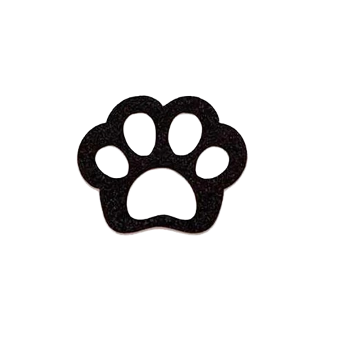

Todo animal merece um lar, mas muitos ainda esperam por amor. Na Adotados & Amados, cada adoção escreve um final feliz - e você pode fazer parte dessa história. Com um simples gesto, transforme duas vidas: a dele e a sua. Juntos, podemos mudar esse destino!
Adotados & Amados nasceu em 2015, quando uma protetora independente, sem recursos mas com enorme coração, decidiu resgatar e castrar animais em necessidade. Inspirada por uma voluntária que cuidava de 120 cachorros sozinha, ela começou a levar bichinhos para feiras de adoção, aprendendo com protetores mais experientes. Em 2018, deixou sua profissão para se dedicar totalmente aos resgates, salvando animais abandonados ou vítimas de maus-tratos. Hoje, mesmo sem apoio institucional, o grupo continua trabalhando com amor, castração e adoção responsável, transformando vidas peludas. Toda ajuda é bem-vinda para que essa corrente de amor nunca se quebre!!
Conheça a nossa equipeTodos os nossos felinos estão entre a faixa-etária de 6 mêses à 1 ano de idade 
Cada adoção dá a um animal abandonado uma segunda chance, livrando-o de riscos como fome, doenças e maus-tratos.
Adotar reduz a superlotação de abrigos e ajuda a frear a reprodução descontrolada de animais de rua.
Além de mudar a história do pet, a adoção enriquece a vida do tutor com amor, companhia e gratidão sem medida.